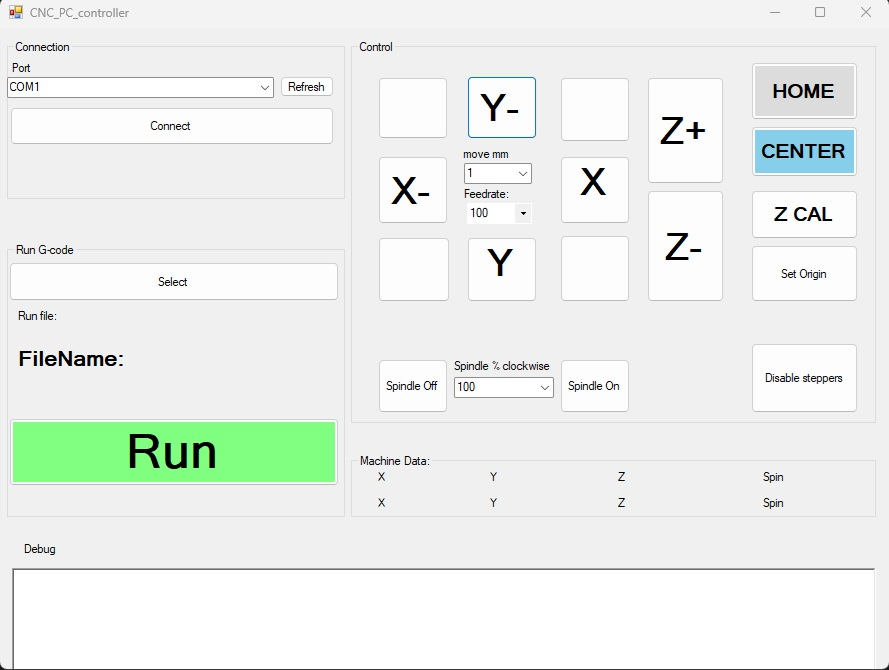

Batchelors Thesis :
Arduino based CNC engraver

Machine
Project Overview
For my bachelors thesis I have suggested theme of making CNC engraver. Goal of project was to make CNC engraver and write firmware for it ot make it work. Ideally machine would be used for PCB milling .
Main challenges included : building machine, percise motor control , reading and interpreting gcode commands , and communication between pc software and machine.
Lessons: software-hardware integration is crucial; mechanical limits dominate performance. Warning: 20k RPM spindle is loud and potentially dangerous.
DEMO
Timeline
Initially i planned to use Ramps 1.4 with arduino mega in order to use LCD + encoder interface to allow standalone operation. There was slight difficulty coming from reliably reading encoder encoder but i was able to solve it and thus make functional interface.
Next big step was reading gcode commands before turning them to movements. Most issues came from difficulty understanding how to read gcode.
Development of movement operations was more difficult than expected. I struggled to implement precise motor control, so I used the AccelStepper library to focus on other control aspects.
However during first full hardware test regulator (ams1117) blew up which forced me to switch to arduino uno. This required exploring usb serial communication as well as developing pc software to send gcode commands to the engraver. In end it turned to be slightly easier than previously thought and big challenges came from syncing communication .
Finnaly once machine was working it was all about testing and fixing bugs.
How code works
Typical use case is that user connects trough pc software to engraver. Next step is to set machine physical position above starting position on material. After that user calibrates Zaxis using CNC touch probe. Once machine is ready user can select gcode file and hit run. During run pc software will send gcode commands line by line while awaiting "$NEXT" ,a signal to send next line .
As arduino recives the line it will start slicing it into induvidual letter-number pairs which are then read and stored into variables. Once end of line is reached execution begins.
Linear movements (G0 and G1) are handled by calculating the number of steps and relative speed for each axis. These values are sent to the AccelStepper library, which executes the movement. Step counts are calculated as distance ÷ step size, and relative speed is determined from the input feedrate multiplied by step ratios.
Arc movments G2 and G3 are done by using brute force approach of using cirlce formula starting from current position for one axis, while other is incremented from center . It also has ability to handle G17-G19 plane selection by switching axis in formula. The point is tracked distance from target and once treshold is reached machine moves to target point . All calulated points are sent to linear movement function .
Spindle control is handled by M3 and M5. It slowly ramps up speed of sindle to avoid high current draw and sparks. It caluates speed by using simple formula of (S/N)*255 where S is spindle speed from gcode and 255 is max value for pwm signal. N is max spindle rpm which is 20 000 i my case.
During whole execution machine is checking endstops and stop button to ensure machine and operator safety. Once execution is finished machine requests optional next line.

PC controller
Mechanics
The mahcine is built out of wooden frame with drawer rails as linear guides. It uses 3d printed parts for holding motors and bearings. Motor rotation is turned to linear movement using T8 rods and nuts . XY axis use 8mm lead while Z axis uses 2mm lead. Material is mounted on wooden bed using insertion nuts and bolts.
Electronics
The machine uses Arduino Uno as main controller and CNC shield as motor driver. Endstops are fused together on single input along with cnc touch probe. Machine uses 3 nema 17 hs4401 motors for movement and 24V 1.5A 20k rpm brushed spindle motor. Board is powered by 12V PSU . Spindle is powered by boost converter to step up voltage to 24V . Spindle control is handeled trough H bridge bts7960 which allows for high current draw. Stepper motors use basic stepper drivers A4988 which are set to full step mode.
Implementation conclusion and issues
Mahcine uses slightly too weak PSU due to my calculation mistake though this is only true if all 3 steppers are used at once and pull max current. Initally i hoped to use PC PSU but it had too much noise which made motors buzz . Reason for 12V PSU is that ramps 1.4 can only use 12V which i initally planned . However boosting 12 to 24V aint ideal as boost struggles to maintain 24V when spindle is not run at full speed. This is likely caused by too low frequency of PWM which causes spindle to draw more current and heats up whole power delivery section.
Code uses simple approach for G2 and G3 commands which is super inneficent due to many calulations per single point as well as heavy use of floating point numbers plus square roots . It also has potential bug if target point is closer than treshold. Ideal soltuion would be to use bresenhams circle algorithm which is designed for raster displays but can be adapted for cnc use.
Reason for regulator failure in past was most likely USB and PSU conflict , ramps 1.4 cannot be used with PC when powered by PSU.
Overall the machine is funcitonal and most likely limited by mechanics rather than electronics or code. It can be used as demo however at 20k rpm spinle is soo loud it poses danger to operator hearing even with protection. Sadly goal of diy PCB milling was not achived due to mechanical limitations.